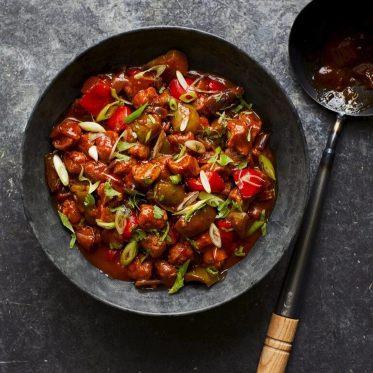

Indo-Chinese soya chilli

Ingredients:
1 vegetable stock cube, 1 litre freshly boiled water, 150g dried soya chunks (from large supermarkets), 3 tbsp vegetable oil, 3-4 dried red chillies, 1 tbsp roughly crushed coriander seeds, 1 tbsp ginger-garlic paste (or ½ tbsp each finely chopped ginger and garlic), 1 roughly chopped red onion, 2 green chillies, 1 green pepper deseeded and chopped into cubes, 1 red pepper deseeded and chopped into cubes, 1 tbsp tomato purée, 1 tsp cornflour, 3 tbsp light soy sauce, 2 tbsp tomato ketchup, 2 tbsp sweet chilli sauce, ½ tsp MSG (optional; from Chinese or Japanese stores), 2 finely sliced spring onions, Handful coriander leaves
Instructions:
1. Put the stock cube in a large heatproof bowl, then pour in the boiling water from the kettle and stir to dissolve. Add the soya chunks, cover and set aside for 1 hour.
2. Heat the oil in a high-sided frying pan over a low-medium heat. Add the dried chillies and coriander seeds, cook for 1 minute, then add the garlic and ginger. Cook for a minute until fragrant, then add the onion, chillies and peppers. Stir fry for 2-3 minutes until the onions soften slightly.
3. Add the tomato purée and cook out for a minute. Drain the soya chunks (reserving the stock) and squeeze them to remove excess liquid, then add them to the pan too and turn the heat up to medium. Continue to stir-fry for another 3 minutes
4. Meanwhile, measure out 350ml of the leftover stock, then whisk in the cornflour. Mix in the soy sauce, ketchup, chilli sauce and MSG (if using). Turn the heat up to high, then pour in the stock mixture, mixing well. Bring to a simmer and cook for a few minutes or until the sauce reduces enough to coat the soya chunks nicely. Season to taste with salt (if needed), then serve with the spring onions and coriander scattered over the top.
Recipe from Deliciousmagazine